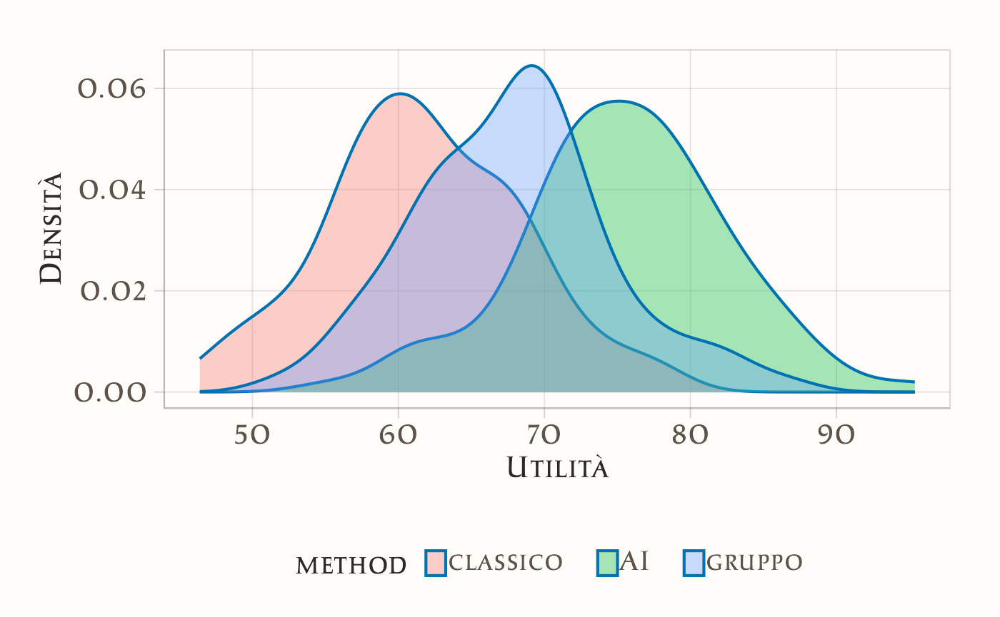

here::here("code", "_common.R") |>
source()
# Additional packages
if (!requireNamespace("pacman")) install.packages("pacman")
pacman::p_load(brms, posterior, loo, cmdstanr, stringr, tidyr)48 Decisione ottimale e utilità attesa: l’approccio bayesiano
Introduzione
L’analisi decisionale bayesiana offre un approccio strutturato per affrontare le scelte in condizioni di incertezza. L’idea di fondo è semplice: ogni alternativa possibile genera diversi esiti, ciascuno con una certa probabilità e con un valore associato in termini di utilità (quanto è desiderabile) o di perdita (quanto è costoso). La decisione migliore è quella che massimizza l’utilità attesa, oppure minimizza la perdita attesa, tenendo conto della distribuzione predittiva degli esiti.
In questo capitolo applicheremo questo quadro teorico a un problema vicino all’esperienza degli studenti di psicologia: la scelta del metodo di studio. Considereremo tre possibili strategie, che si differenziano per impegno richiesto ed efficacia prevista:
- Metodo classico: studio individuale su testi ed esercizi, senza supporti interattivi.
- Metodo di gruppo: lo stesso approccio classico, arricchito da discussioni in piccoli gruppi per chiarire e consolidare i contenuti.
- Metodo con AI tutor: studio su testi integrato con spiegazioni alternative, chat interattiva ed esercizi generati automaticamente da un tutor basato su intelligenza artificiale.
Gli esiti che ci interessano sono due: il voto d’esame (\(g \in [0,100]\)) e le ore di studio necessarie (\(h \geq 0\)). Entrambi sono caratterizzati da incertezza, legata sia alle differenze individuali (abilità, motivazione, stile di apprendimento), sia alla variabilità intrinseca del processo di studio.
Il framework bayesiano ci consentirà di stimare la distribuzione congiunta di \((g,h)\) per ciascun metodo, di combinare voto e tempo in un’unica misura tramite una funzione di utilità. Per la discussione presente scegliamo la seguente funzione:
\[ U(g,h;\lambda) = g - \lambda h, \] dove \(\lambda \geq 0\) indica quanto “costa” un’ora di studio in termini di punti di voto. In questo modo potremo calcolare l’utilità attesa di ciascun metodo, integrando l’incertezza attraverso simulazioni, e infine identificare l’opzione che ha maggiore probabilità di rappresentare la scelta ottimale.
Panoramica del capitolo
- Le quattro fasi dell’analisi decisionale bayesiana.
- Modellare la distribuzione predittiva degli esiti.
- Formulare e interpretare una funzione di utilità.
- Identificare la decisione ottimale.
- Limiti del modello lineare.
48.1 Schema in quattro passi
Seguendo l’impostazione proposta da Gelman et al. (2013), l’analisi decisionale bayesiana si articola in quattro fasi: definizione del problema, modellazione degli esiti, specificazione della funzione di utilità e scelta della decisione ottimale. Nel nostro caso, queste fasi vengono applicate alla scelta del metodo di studio.
1. Definizione delle alternative e degli esiti Le decisioni possibili sono tre: metodo classico, studio di gruppo e AI tutor. Ogni decisione porta a due esiti di interesse: il voto d’esame \(g\) (tra 0 e 100) e le ore di studio \(h\) (con \(h \geq 0\)).
2. Modellazione della distribuzione predittiva Per descrivere la variabilità dei risultati usiamo un modello gerarchico stimato da dati storici (ad esempio, i registri di studenti dell’anno precedente). Assumiamo che le ore di studio seguano una distribuzione lognormale, adatta a variabili non negative e asimmetriche, mentre il voto dipende dalle ore in modo sublineare, riflettendo rendimenti decrescenti: inizialmente ogni ora extra produce un buon guadagno, ma col tempo l’effetto si attenua.
3. Funzione di utilità Per confrontare i metodi su un’unica scala, combiniamo voto e ore in una funzione di utilità lineare:
\[ U(g,h;\lambda) = g - \lambda h, \] dove \(\lambda\) esprime quanto pesa il tempo rispetto al voto. Ad esempio, con \(\lambda=0\) conta solo il voto, mentre con \(\lambda=2\) ogni ora di studio “costa” due punti d’esame.
4. Decisione ottimale L’alternativa migliore è quella che massimizza l’utilità attesa, calcolata integrando l’incertezza sia sui parametri del modello sia sulla variabilità predittiva degli esiti. In pratica, questa integrazione si realizza tramite simulazioni dalla distribuzione predittiva posteriore, così da ottenere un confronto robusto tra le opzioni disponibili.
48.1.1 Simulazione dei dati
Per illustrare il funzionamento dell’analisi decisionale bayesiana, iniziamo simulando un dataset. Questo ci permette di sapere quali sono i “veri” parametri del mondo simulato e di verificare se il modello bayesiano riesce a recuperarli. Il campione simulato comprende 300 studenti, ciascuno assegnato casualmente a uno dei tre metodi di studio: classico, AI tutor e gruppo.
Per rendere l’esempio più realistico, ipotizziamo che le ore di studio (\(H\)) seguano una distribuzione lognormale, che garantisce valori non negativi e una coda a destra (alcuni studenti studiano molto di più della media). Ogni metodo ha una diversa mediana e variabilità: il metodo classico richiede meno ore, l’AI tutor un impegno intermedio, e il gruppo più ore e con maggiore dispersione.
Il voto d’esame (\(G\)) dipende dalle ore di studio con rendimenti decrescenti, modellati tramite la funzione logaritmica. Ogni metodo ha parametri diversi: l’AI tutor è più efficace, il metodo di gruppo offre buoni risultati ma a caro prezzo in termini di ore, e il metodo classico è il meno performante.
Infine, specifichiamo il costo orario in termini di punti d’esame, fissato a \(\lambda = 0.65\):
lambda <- 0.65Con questi ingredienti generiamo le osservazioni simulate:
Calcoliamo poi l’utilità vera per ciascuno studente e verifichiamo come si distribuisce nei tre gruppi:
u_true <- g - lambda * h
df_sim <- data.frame(
method = factor(method_names[d], levels = method_names),
g = g,
h = h, u = u_true
)
ggplot(df_sim, aes(x = u, fill = method)) +
geom_density(alpha = 0.35) +
labs(x = "Utilità", y = "Densità")
Questo grafico mostra come, in base ai parametri scelti, i metodi producano distribuzioni diverse di utilità. È una prima verifica che il modello simulato genera differenze plausibili e interpretabili, prima di passare alla stima vera e propria con Stan.
Prepariamo i dati per Stan:
stan_data <- list(N = N, d = as.integer(d), h = h, g = g, lambda = lambda)
glimpse(stan_data)
#> List of 5
#> $ N : num 300
#> $ d : int [1:300] 3 3 3 2 3 2 2 2 3 1 ...
#> $ h : num [1:300] 41.4 22.8 23.1 20.7 12 ...
#> $ g : num [1:300] 83.9 85.5 84 93.5 70.5 ...
#> $ lambda: num 0.6548.1.2 Specificazione del modello Stan
Il modello bayesiano viene implementato in Stan seguendo una struttura modulare che riflette le componenti concettuali del problema decisionale. La specificazione del codice procede attraverso i seguenti blocchi fondamentali:
Blocco delle funzioni: definisce la funzione di utilità \(U(g, h; \lambda) = g - \lambda h\), che combina voti e ore in un unico indice di preferenza.
Blocco dei dati: dichiara le variabili osservate, tra cui il numero di osservazioni \(N\), il metodo di studio scelto \(d\), le ore di studio \(h\), i voti ottenuti \(g\) e il parametro di trade-off \(\lambda\).
Blocco dei parametri: include i parametri da stimare, specifici per ciascun metodo:
- parametri della distribuzione lognormale per le ore di studio (\(\mu_h\), \(\sigma_h\)),
- coefficienti della relazione tra log(ore) e voto (\(\alpha\), \(\beta\)),
- deviazione standard residua del voto (\(\sigma_g\)).
Blocco del modello: specifica le distribuzioni a priori debolmente informative e la verosimiglianza dei dati. Le ore seguono una distribuzione lognormale, mentre i voti sono modellati con una normale la cui media dipende dal logaritmo delle ore.
Blocco delle quantità generate: simula valori predittivi per ore e voti per ciascun metodo, calcolando quindi l’utilità corrispondente. Queste simulazioni permettono di stimare l’utilità attesa e confrontare i metodi.
stancode <- "
functions {
real U(real g, real h, real lambda) {
return g - lambda * h;
}
}
data {
int<lower=0> N; // numero osservazioni
array[N] int<lower=1, upper=3> d; // decisione osservata: 1=classico, 2=AI, 3=gruppo
vector<lower=0>[N] h; // ore osservate
vector<lower=0, upper=100>[N] g; // voto osservato (clippato 0..100 a valle)
real<lower=0> lambda; // costo orario in punti-voto
}
parameters {
// ore ~ lognormal per metodo
vector[3] mu_h; // location log(ore) per metodo
vector<lower=0>[3] sigma_h; // scale log(ore) per metodo
// voto | (h, metodo) ~ Normal
vector[3] alpha; // intercetta per metodo
vector[3] beta; // pendenza su log1p(h) per metodo
real<lower=0> sigma_g; // sd residua del voto
}
model {
// Priors debolmente informativi
mu_h ~ normal(log(10), 1); // ore tipiche ~ e^N(log(10),1) ≈ 10 ore medie
sigma_h ~ normal(0, 0.5); // >0; log-sd moderata
alpha ~ normal(60, 20); // voto tipico ~60 (ampio)
beta ~ normal(5, 5); // più ore => voto più alto (a priori)
sigma_g ~ student_t(3, 0, 10); // rumore voto
// Likelihood
for (n in 1:N) {
h[n] ~ lognormal(mu_h[d[n]], sigma_h[d[n]]);
g[n] ~ normal(alpha[d[n]] + beta[d[n]] * log1p(h[n]), sigma_g);
}
}
generated quantities {
// utilità predittiva una-estrazione per ciascun metodo
array[3] real util;
array[3] real g_tilde;
array[3] real h_tilde;
for (k in 1:3) {
h_tilde[k] = lognormal_rng(mu_h[k], sigma_h[k]);
real mu_g = alpha[k] + beta[k] * log1p(h_tilde[k]);
g_tilde[k] = normal_rng(mu_g, sigma_g);
util[k] = U(g_tilde[k], h_tilde[k], lambda);
}
}
"Il modello integra quindi tre componenti essenziali: (1) una funzione di utilità che sintetizza il trade-off tra risultati accademici e impegno temporale; (2) un meccanismo generativo che cattura la relazione tra ore di studio e performance; (3) simulazioni predittive che incorporano l’incertezza parametrica e la variabilità intrinseca degli esiti.
Questa implementazione consente non solo di stimare i parametri del modello, ma anche di confrontare le alternative decisionali attraverso il calcolo dell’utilità attesa, fornendo così una base quantitativa solida per la scelta del metodo di studio ottimale.
48.1.3 Compilazione ed esecuzione del modello
Compiliamo il modello Stan:
stanmod <- cmdstan_model(
write_stan_file(stancode),
compile = TRUE
)Eseguiamo il campionamento MCMC:
fit <- stanmod$sample(
data = stan_data,
seed = 2025,
chains = 4, parallel_chains = 4,
iter_warmup = 1000, iter_sampling = 2000,
refresh = 200
)Riepilogo dei parametri principali:
print(fit$summary(c("mu_h","sigma_h","alpha","beta","sigma_g")))
#> # A tibble: 13 × 10
#> variable mean median sd mad q5 q95 rhat ess_bulk ess_tail
#> <chr> <dbl> <dbl> <dbl> <dbl> <dbl> <dbl> <dbl> <dbl> <dbl>
#> 1 mu_h[1] 2.060 2.061 0.029 0.030 2.011 2.108 1.001 8799.832 6022.465
#> 2 mu_h[2] 2.424 2.424 0.046 0.046 2.349 2.498 1.001 9771.434 5748.160
#> 3 mu_h[3] 2.744 2.744 0.048 0.048 2.665 2.823 1.000 8858.073 5913.963
#> 4 sigma_h[1] 0.309 0.308 0.021 0.021 0.277 0.344 1.000 9632.056 5815.072
#> 5 sigma_h[2] 0.466 0.465 0.034 0.033 0.414 0.524 1.001 8735.263 5292.249
#> 6 sigma_h[3] 0.462 0.459 0.035 0.033 0.408 0.524 1.000 10539.108 5879.366
#> 7 alpha[1] 55.716 55.682 4.632 4.638 48.194 63.271 1.001 5453.435 5227.550
#> 8 alpha[2] 64.053 64.014 3.807 3.840 57.687 70.275 1.000 5815.791 5159.801
#> 9 alpha[3] 54.795 54.802 4.382 4.360 47.524 62.102 1.001 5614.951 5345.316
#> 10 beta[1] 5.205 5.217 2.097 2.095 1.791 8.616 1.001 5438.111 5194.190
#> 11 beta[2] 7.764 7.761 1.494 1.496 5.314 10.235 1.000 5798.738 5291.496
#> 12 beta[3] 8.579 8.559 1.536 1.524 6.055 11.141 1.001 5508.905 4994.723
#> 13 sigma_g 6.728 6.724 0.279 0.277 6.280 7.205 1.000 8493.763 5783.98048.1.4 Estrazione e analisi delle utilità predittive
Dopo aver adattato il modello in Stan, estraiamo le utilità predittive per ciascun metodo. Queste derivano dalle simulazioni MCMC e incorporano sia l’incertezza sui parametri sia la variabilità intrinseca degli esiti.
48.1.4.1 Utilità attesa e metodo ottimale
Calcoliamo la media delle utilità per ciascun metodo e identifichiamo quello con valore più alto, cioè l’alternativa ottimale per il valore di \(\lambda\) scelto.
48.1.4.2 Probabilità di optimalità
Oltre al confronto delle medie, possiamo stimare la probabilità che ciascun metodo sia davvero il migliore. Questo si ottiene verificando, in ogni simulazione, quale metodo raggiunge l’utilità massima e calcolando le frequenze relative.
best_idx <- max.col(Umat, ties.method = "first")
p_opt <- prop.table(table(factor(best_idx, levels = 1:3, labels = method_names)))
p_opt
#>
#> classico AI gruppo
#> 0.0494 0.7456 0.205048.1.4.3 Analisi delle distribuzioni
Per avere un quadro completo non basta confrontare le medie: è utile osservare anche la forma delle distribuzioni delle utilità predittive. Possiamo calcolare statistiche descrittive e visualizzare le densità per ciascun metodo.
util_long <- as.data.frame(Umat) |>
tibble::rownames_to_column(var = ".draw") |>
mutate(.draw = as.integer(.draw)) |>
pivot_longer(cols = all_of(method_names),
names_to = "method", values_to = "util")
util_sum <- util_long |>
group_by(method) |>
summarize(mean = mean(util),
sd = sd(util),
q05 = quantile(util, 0.05),
q50 = median(util),
q95 = quantile(util, 0.95),
.groups = "drop")
util_sum
#> # A tibble: 3 × 6
#> method mean sd q05 q50 q95
#> <chr> <dbl> <dbl> <dbl> <dbl> <dbl>
#> 1 AI 75.3 6.88 63.8 75.4 86.6
#> 2 classico 61.7 6.78 50.5 61.7 73.0
#> 3 gruppo 67.7 7.17 55.7 67.8 79.048.1.4.4 Visualizzazione grafica
ggplot(util_long, aes(x = util, fill = method)) +
geom_density(alpha = 0.4) +
labs(x = "Utilità predittiva", y = "Densità") +
theme_minimal() +
scale_fill_brewer(palette = "Set1", name = "Metodo")48.1.5 Interpretazione dei risultati
Il grafico presenta la distribuzione dell’utilità predittiva associata a ciascun metodo di studio, calcolata mediante la relazione:
\[ U = G - \lambda H \] dove \(G\) rappresenta il voto ottenuto e \(H\) le ore di studio investite. Valori elevati di utilità indicano combinazioni favorevoli caratterizzate da voti alti ottenuti con un impegno temporale contenuto, mentre valori ridotti segnalano esiti meno soddisfacenti, dovuti a performance modeste e/o a un elevato numero di ore dedicate.
L’analisi delle distribuzioni consente di valutare tre aspetti fondamentali. La posizione centrale dell’utilità (sintetizzata dalla media o dalla mediana) fornisce una stima del vantaggio atteso associato a ciascun metodo, indicando quale approccio tende a produrre i risultati più desiderabili in condizioni medie.
La dispersione della distribuzione riflette invece il grado di incertezza e variabilità negli esiti possibili. Una maggiore dispersione segnala che i risultati individuali possono discostarsi significativamente dal valore atteso, mentre una distribuzione più concentrata suggerisce outcomes più prevedibili.
Infine, la sovrapposizione tra le distribuzioni dei diversi metodi rivela in quali scenari le alternative producono risultati simili. Aree di sovrapposizione estesa indicano che la scelta tra metodi potrebbe essere meno netta in certe condizioni, mentre distribzioni ben separate suggeriscono differenze più marcate nelle performance attese.
Questo approccio analitico supera la semplice identificazione del “miglior metodo in media” per considerare l’intero spettro di possibili esiti, offrendo così una valutazione completa che tiene conto tanto del valore atteso quanto dell’incertezza predittiva.
48.1.6 Analisi comparativa a parità di input
Per confrontare i tre metodi in modo intuitivo, possiamo considerare due scenari:
- fissiamo il tempo di studio (\(H\)) e confrontiamo quale metodo produce il voto atteso più alto;
- fissiamo invece un obiettivo di voto (\(G\_0\)) e vediamo quanto tempo richiede ciascun metodo per raggiungerlo.
48.1.6.1 Confronto a ore costanti
Quando manteniamo costanti le ore di studio, l’unica differenza tra metodi riguarda la performance attesa (\(G\)). A parità di tempo, il metodo che garantisce un voto più alto produce anche un’utilità maggiore.
Un esempio numerico lo chiarisce: con \(\lambda = 0.5\) (due ore di studio equivalgono a un punto di voto) e \(H=12\) ore per tutti:
| Metodo | Voto atteso \(G\) | Ore \(H\) | Utilità \(U = G - \lambda H\) |
|---|---|---|---|
| Classico | 78 | 12 | 72 |
| AI | 82 | 12 | 76 |
| Gruppo | 79 | 12 | 73 |
In questo scenario il metodo AI prevale. Tuttavia, se richiedesse più tempo (ad esempio 15 ore anziché 12), l’utilità si ridurrebbe a:
G_AI <- 82
H_AI <- 15
lambda <- 0.5
U_AI <- G_AI - lambda * H_AI
U_AI
#> [1] 74.5Pur restando vantaggioso rispetto al metodo classico (72), il margine si ridurrebbe sensibilmente.
48.1.6.2 Confronto a voto costante
Un’altra prospettiva è chiedersi quante ore servono per raggiungere un certo voto obiettivo. Questo ci permette di valutare l’efficienza temporale dei metodi.
Partiamo stimando i parametri del modello e fissiamo tre obiettivi di voto:
Calcoliamo quindi le ore richieste per ogni obiettivo:
# Funzione: ore necessarie per raggiungere G0
Hreq_fun <- function(G0, alpha, beta) {
pmax(exp((G0 - alpha)/beta) - 1, 0)
}
# Calcoli su tutti i target e metodi
out <- lapply(G_targets, function(G0) {
Hreq_mat <- sapply(1:3, function(k) {
alpha_k <- draws[, paste0("alpha[", k, "]")]
beta_k <- draws[, paste0("beta[", k, "]")]
Hreq_fun(G0, alpha_k, beta_k)
})
colnames(Hreq_mat) <- method_names
as_tibble(Hreq_mat) |> mutate(G0 = G0, .draw = row_number())
}) |> bind_rows()Riassumiamo i risultati con mediane e intervalli interquartili:
Visualizziamo i confronti:
ggplot(Hreq_summary, aes(x = factor(G0), y = mediana, fill = metodo)) +
geom_col(position = position_dodge(width = 0.8)) +
geom_errorbar(aes(ymin = q25, ymax = q75),
position = position_dodge(width = 0.8),
width = 0.2) +
labs(x = "Voto obiettivo (G0)",
y = "Ore di studio necessarie\n(mediana con IQR)",
fill = "Metodo") 48.1.7 Interpretazione
- Efficienza a parità di ore: il metodo AI tende a produrre voti più alti e quindi maggiore utilità, ma il vantaggio può ridursi se richiede più tempo.
- Efficienza a parità di voto: i metodi che necessitano meno ore per raggiungere lo stesso obiettivo sono più efficienti; il grafico mostra chiaramente queste differenze.
- Incertezza: gli intervalli interquartili (IQR) indicano che non c’è una separazione netta: alcuni studenti possono ottenere risultati simili con metodi diversi.
In questo modo, il confronto tra metodi diventa più ricco: non ci fermiamo a dire “chi è il migliore”, ma vediamo in quali condizioni un metodo può risultare più vantaggioso.
48.1.8 Verso modelli più realistici: oltre la funzione di utilità lineare
La funzione di utilità lineare qui adottata,
\[ U(g,h;\lambda) = g - \lambda h, \quad \lambda \geq 0, \] presenta il pregio di una notevole semplicità interpretativa: ogni ora di studio viene infatti associata a un “costo” costante, pari a \(\lambda\) punti di voto. Tuttavia, questa formulazione poggia su due ipotesi semplificatrici che possono discostarsi dal comportamento effettivo degli studenti. In primo luogo, la linearità nel voto implica che il valore marginale di ciascun punto sia identico a qualsiasi livello della scala di valutazione, equiparando ad esempio il passaggio da 60 a 61 a quello da 90 a 91. In secondo luogo, la linearità nel tempo presuppone che il disagio associato a un’ora aggiuntiva di studio rimanga invariato, indipendentemente dal numero di ore già dedicate.
Queste assunzioni, sebbene utili in una fase introduttiva, possono risultare limitanti nel momento in cui si desideri cogliere la complessità delle preferenze individuali. È pertanto opportuno considerare alcune estensioni del modello in grado di conferirle maggiore realismo.
Una prima direzione di sviluppo riguarda l’introduzione di non linearità nella componente relativa al voto. È plausibile, ad esempio, che i voti presentino rendimenti decrescenti, per cui guadagnare punti in prossimità della sufficienza venga percepito come più rilevante che incrementare il punteggio in regioni già elevate della scala. Allo stesso modo, si potrebbero incorporare soglie minime al di sotto delle quali un esito viene considerato inaccettabile, indipendentemente dal tempo investito.
Anche la relazione tra utilità e tempo potrebbe essere arricchita per riflettere in modo più fedele l’esperienza soggettiva. La fatica associata allo studio tende infatti ad aumentare in modo non lineare con il numero di ore, suggerendo l’adozione di funzioni con esponente (quali \(h^2\) o \(h^{1.5}\)) in grado di catturare questa progressione.
Ulteriori aspetti rilevanti includono il ruolo degli obiettivi personali, poiché gli studenti potrebbero mostrare avversione alle perdite, attribuendo un peso maggiore al mancato raggiungimento di un traguardo rispetto al superamento dello stesso. Allo stesso modo, la gestione del rischio e dell’incertezza merita particolare attenzione: alcuni individui potrebbero preferire metodi che offrono risultati più stabili, anche se meno brillanti in media, richiedendo quindi di considerare non solo il valore atteso dell’utilità ma anche la sua variabilità o il suo comportamento in scenari sfavorevoli.
Infine, è importante riconoscere che il trade-off tra voto e tempo può variare notevolmente tra diversi profili di studenti, come nel caso di lavoratori part-time rispetto a studenti a tempo pieno. Modelli gerarchici consentono di stimare tale variabilità individuale preservando al contempo una struttura comune.
Per un ricercatore che si accinga ad affrontare questo tipo di analisi, si raccomanda un approccio progressivo. È preferibile iniziare con il modello lineare, apprezzabile per la sua trasparenza e facilità di comunicazione, per poi verificare—attraverso un’attenta analisi esplorativa dei dati—l’eventuale presenza di non linearità o altri effetti complessi. Solo in seguito all’identificazione di tali pattern dovrebbe essere contemplata l’introduzione di complessità aggiuntive, sempre nel rispetto di un equilibrio tra realismo e interpretabilità dei risultati.
Riflessioni conclusive
In questo capitolo abbiamo esplorato come l’analisi decisionale bayesiana offra un quadro coerente per integrare diverse componenti fondamentali: le previsioni sugli esiti, attraverso distribuzioni predittive che riflettono la nostra incertezza; la formalizzazione delle preferenze, mediante funzioni di utilità che quantificano la desiderabilità dei risultati; e infine un criterio di scelta razionale, rappresentato dalla massimizzazione dell’utilità attesa.
Abbiamo iniziato con un modello semplice, caratterizzato da una funzione di utilità lineare sia nel voto che nel tempo. Questa scelta, sebbene simplificata, si è rivelata preziosa per introdurre i concetti cardine del metodo: tradurre in valori numerici il grado di soddisfazione associato a diversi esiti, calcolare utilità attese che incorporino l’incertezza predittiva e confrontare in modo sistematico alternative complesse. Successivamente, abbiamo discusso come estendere questo modello per cogliere aspetti più realistici del processo decisionale, come la presenza di rendimenti decrescenti nel voto, costi marginali crescenti del tempo di studio, il ruolo degli obiettivi personali e l’avversione al rischio, nonché la possibile eterogeneità delle preferenze tra individui.
Dal punto di vista applicativo, emerge con chiarezza il valore di un approccio incrementale. È consigliabile iniziare con un modello lineare semplice, che garantisce trasparenza e facilità di comunicazione, per poi verificare empiricamente—attraverso l’analisi dei dati—la validità delle sue assunzioni. Solo qualora emergano evidenze di non linearità, effetti soglia o sensibilità al rischio, ha senso considerare modelli più complessi, sempre mantenendo un attento equilibrio tra realismo e interpretabilità.
Il vantaggio distintivo dell’approccio bayesiano risiede nella sua capacità di propagare in modo coerente tutte le fonti di incertezza—sui parametri del modello e sulla variabilità degli esiti—fino alla quantificazione dell’utilità attesa. Questo permette non solo di identificare l’opzione mediamente migliore, ma anche di valutare la robustezza di questa conclusione, esprimendo ad esempio la probabilità che una data alternativa sia da preferire.
In definitiva, l’analisi decisionale bayesiana si configura non solo come una tecnica per supportare scelte ottimali in condizioni di incertezza, ma anche come una metodologia per rendere esplicito, trasparente e criticabile il processo attraverso cui valutiamo e confrontiamo le alternative a nostra disposizione.
Bibliografia
Gelman, A., Carlin, J. B., Stern, H. S., Dunson, D. B., Vehtari, A., & Rubin, D. B. (2013). Bayesian Data Analysis (3rd ed.). Chapman; Hall/CRC.
McElreath, R. (2020). Statistical rethinking: A Bayesian course with examples in R and Stan (2nd Edition). CRC Press.